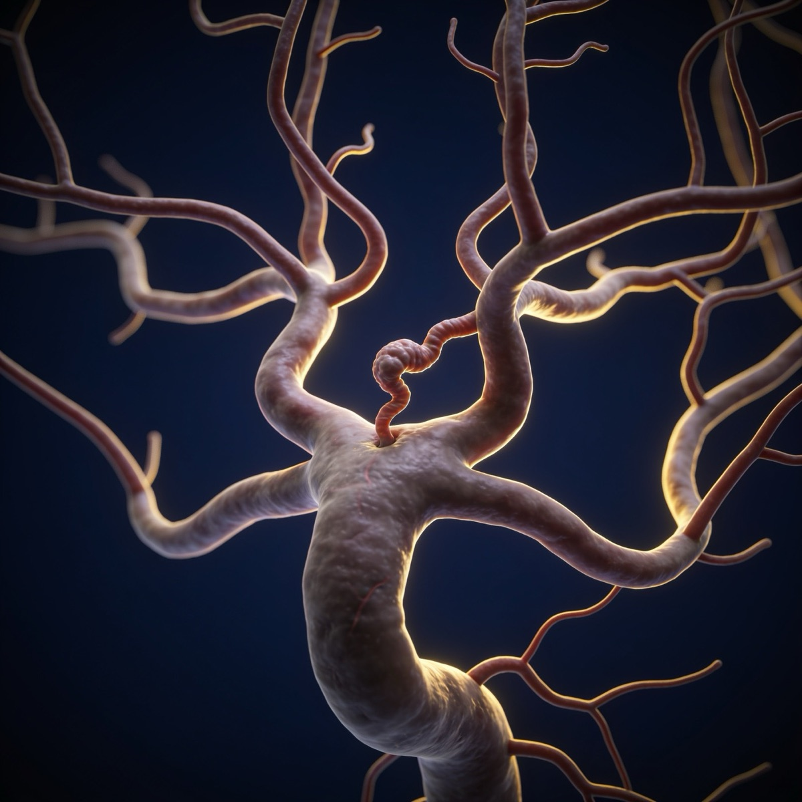
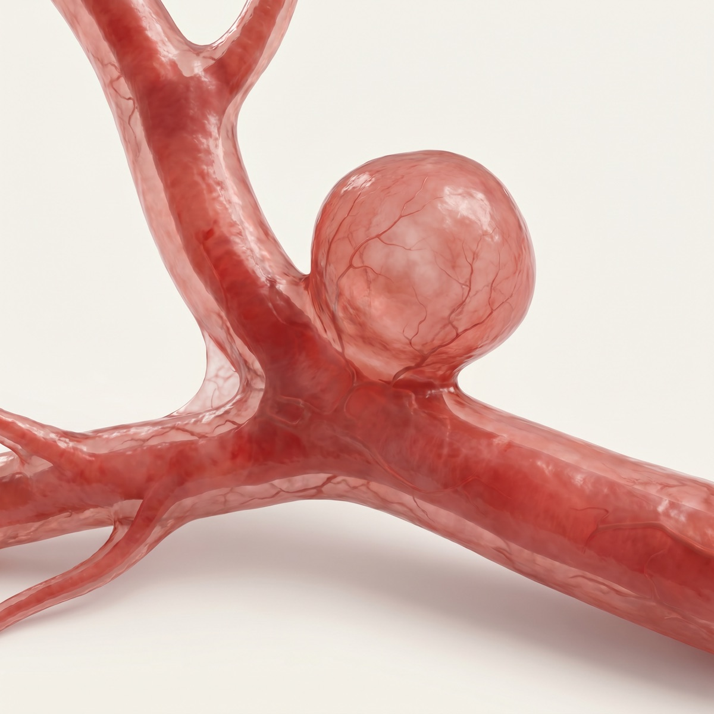
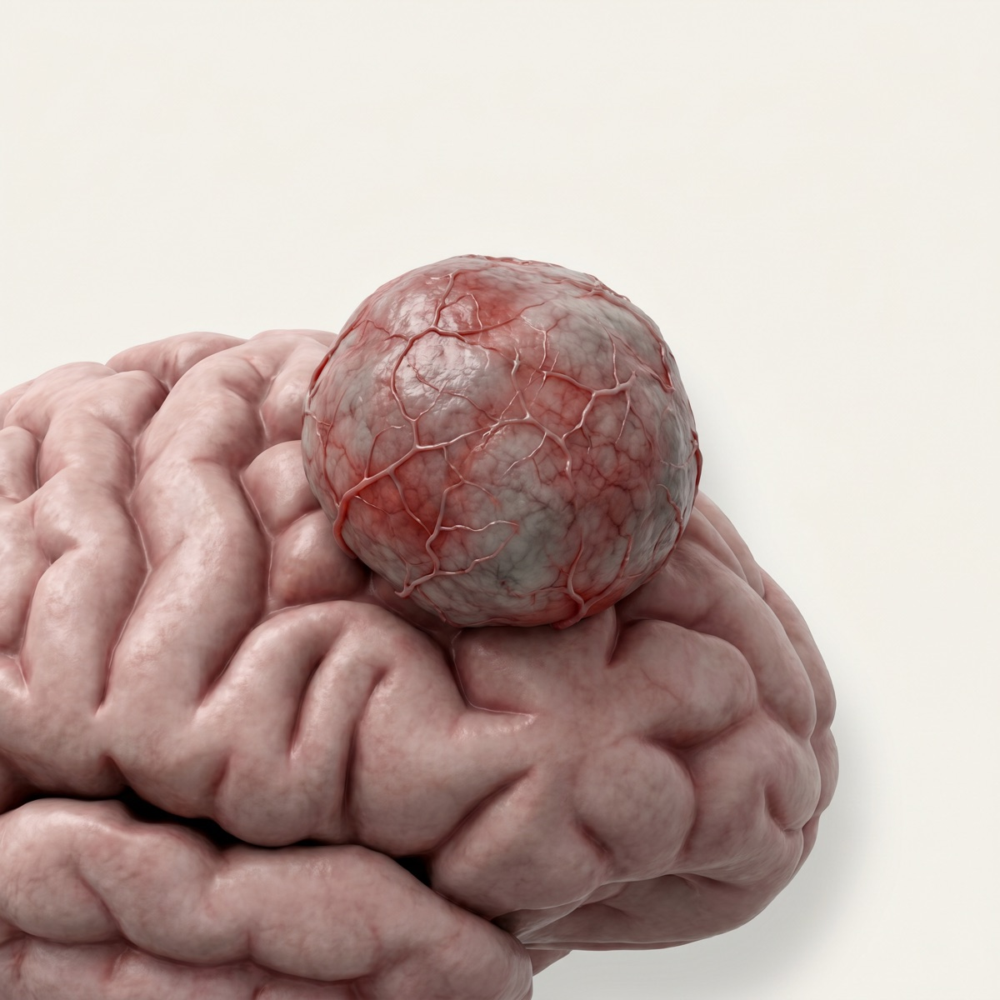
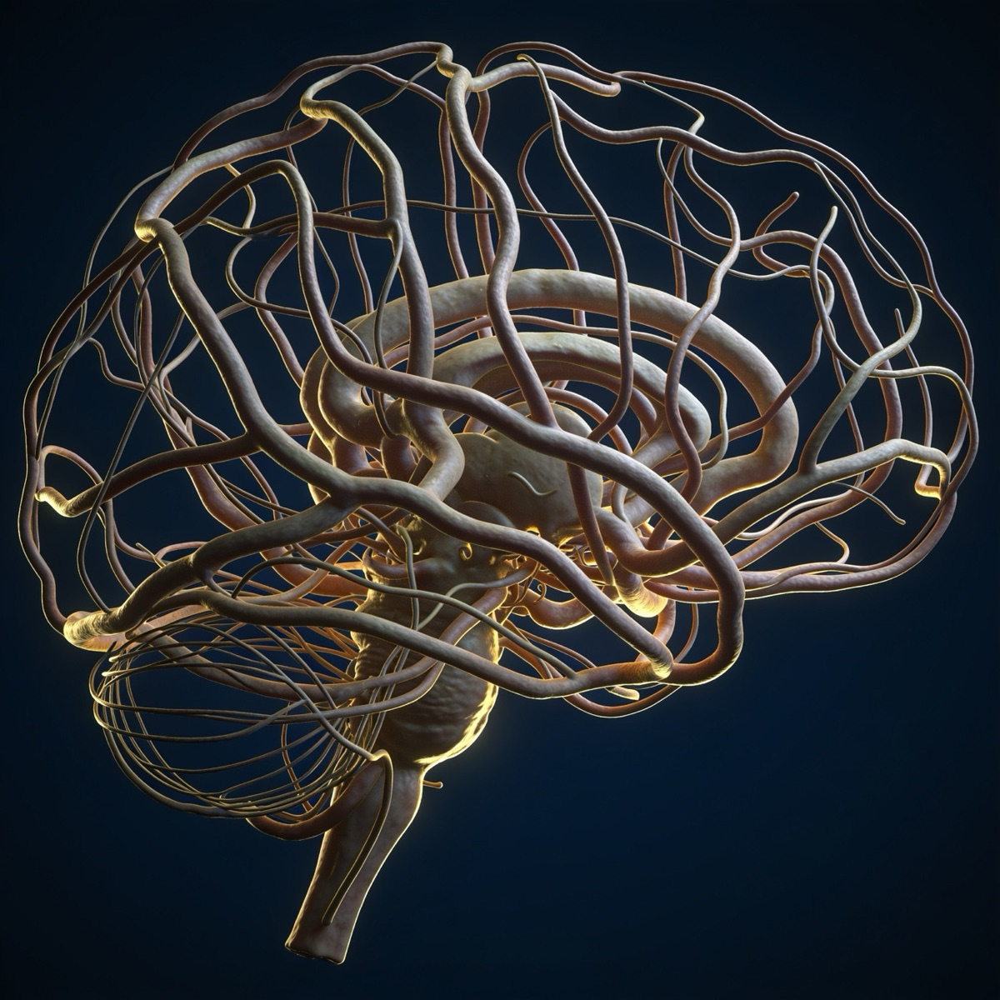
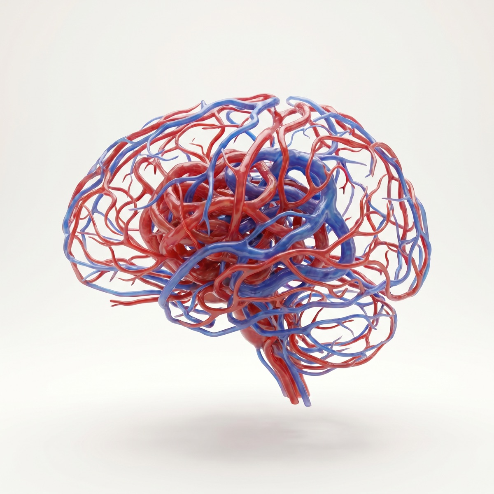

O cliente apontou que os renders atuais parecem ilustração 3D, escura e pouco realista. Trouxemos duas direções mais reais e claras para escolher. Abaixo, 3 procedimentos de exemplo lado a lado, para travar a linha antes de gerar os 11.
Render CGI dramático, fundo navy escuro e luz dourada. Bonito, mas “parece ilustração”, não real.
A condição em si (aneurisma, tumor, MAV) fotorrealista e clara. Mostra o problema que o Dr. resolve.
A cirurgia em andamento — microscópio, neuronavegação, precisão. 100% real e sem peso; mostra a expertise.

Fundo navy, luz dourada, aspecto de ilustração — o que sai hoje.

Aneurisma sacular nítido na bifurcação da artéria. Realista, claro e premium.
Mostra o problema — realista e acolhedorO procedimento em si: microscópio cirúrgico e neuronavegação vascular. Real, sem peso.
100% real, sem peso — mostra a expertiseFundo navy, luz dourada, aspecto de ilustração — o que sai hoje.

Massa tumoral vascularizada sobre o córtex, isolada em fundo claro.
Mostra o problema — realista e acolhedorCirurgia guiada por ressonância na neuronavegação. Ambiente clínico, sem sangue.
100% real, sem peso — mostra a expertise
Fundo navy, luz dourada, aspecto de ilustração — o que sai hoje.

Emaranhado arteriovenoso (nidus) em vermelho e azul, fundo neutro. Distinto e legível.
Mostra o problema — realista e acolhedorMicrocirurgia sob microscópio com angiografia na tela. High-tech e tranquilizador.
100% real, sem peso — mostra a expertiseEscolhida a direção — Anatomia ou Procedimento —, gero a linha para os 11 procedimentos e atualizo esta mesma página com todos lado a lado para a aprovação final do cliente. As duas são 100% mais realistas e claras que o render atual; a escolha é de mensagem: mostrar a condição ou a cirurgia.
Aguardando aprovação da direção